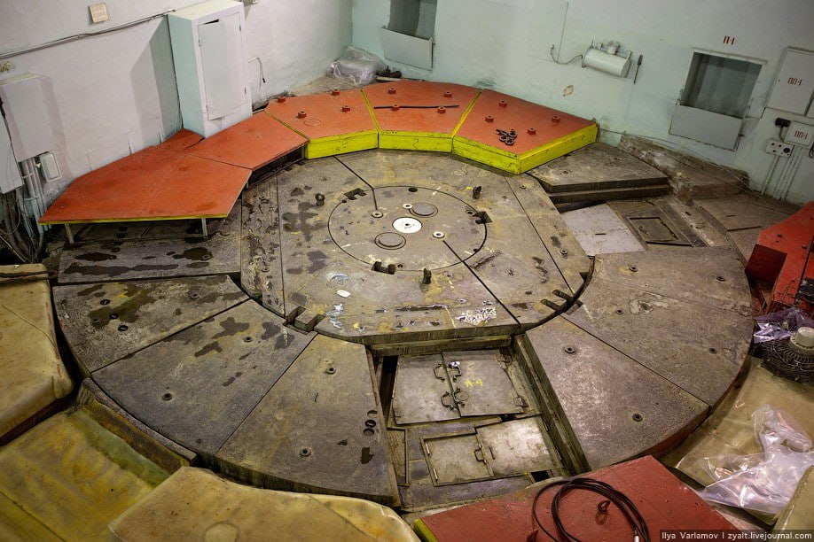

«Делайте в своей работе, в жизни только самое главное.»
«Я счастлив, что родился в России и посвятил свою жизнь атомной науке великой Страны Советов.»
Курчатов Игорь Васильевич – учёный, физик-ядерщик, основатель и первый директор Института атомной
энергии
(
1943
–1960
), научный руководитель атомного проекта
в СССР, один из основоположников использования ядерной
энергии в мирных целях.
Исследования в ядерной физике:
В 1930
-е годы Курчатов начал заниматься ядерной физикой, став одним из
ведущих специалистов в этой области.
Вместе с сотрудниками ЛФТИ он изучал ядерные реакции и нейтронную физику.
В
1935
году совместно с Л.И. Русиновым обнаружил явление ядерной
изомерии.
Работа над атомным проектом:
Под руководством Курчатова советская наука быстро ликвидировала ядерную монополию США и начала
использовать
атомную энергию в мирных целях. Секретная Лаборатория № 2, которой руководил Курчатов, стала
Институтом
атомной энергии им. И.В. Курчатова. Курчатов предвидел, что “современная война - это война
научных
лабораторий”.
Под руководством Курчатова, так же была разработана первая в мире водородная бомба
мощностью 400 кт, а
позднее, благодаря подробному изучению процессов , происходящих при взрыве атомной бомбы, Игорь
Васильевич разработал термоядерную бомбу (« Царь-бомба») с рекордной мощностью в
52000 кт. После
испытаний советской термоядерной бомбы Курчатов сказал академику Александрову:
«Это было чудовищное
зрелище! Нельзя допустить, чтобы это оружие начали применять». В
1956
году Курчатов во время визита
Хрущёва в Англию призвал все страны присоединиться к мирной программе термоядерного
синтеза, и сказал
замечательные слова: «Атом должен быть рабочим, а не солдатом».
Вклад в развитие ядерной энергетики:
Так же Курчатов стал руководителем постройкой первой в мире АЭС — Обнинской. Она была
запущена в 1954
году и
проработала более полувека. Сейчас Обнинская АЭС стала музеем атомной энергетики.

Идея использования атомной энергии на ледоколах:
Курчатов был одним из инициаторов и вдохновителей идеи использования ядерной энергии для
создания ледоколов.
Он понимал, что атомная энергия может обеспечить необходимую мощность и автономность для ледокольных
работ в
Арктике. В условиях ограниченных ресурсов обычного топлива для ледоколов, идея использования
атомной энергии
была революционной и открывала новые возможности для освоения Арктики. Курчатов принимал
личное участие в
разработке первой ядерной установки для ледокола “Ленин”. Под его руководством проводились
исследования и
разработки, необходимые для создания компактного и надежного ядерного реактора, пригодного для работы
в
суровых условиях Арктики. Он лично контролировал процесс создания и испытания ядерной
установки.
Спасение людей от «Магнитной Смерти»:
В годы Второй мировой войны Курчатов спас Красный Флот от “магнитной смерти” (магнитных
мин). Вместе с
Анатолием Александровым он разработал метод размагничивания кораблей с помощью кабелей,
компенсирующих
магнитное поле судна. Под руководством Курчатова был усовершенствован метод измерений и разработан
безобмоточный способ размагничивания в открытом море. Благодаря этим разработкам все советские корабли стали
неуязвимы для магнитных мин, а Курчатов и его коллеги получили Сталинскую премию в 1942
году.
(Германия начала использовать магнитные мины ещё в
1939
году против
Англии. Долгое время считалось, что
спастись от них невозможно. Такая мина действовала бесконтактно: опускалась на дно и оставалась
незамеченной, пока над ней не проходил корабль. Его металлический корпус изменял магнитное поле — это и
приводило мину в действие.)